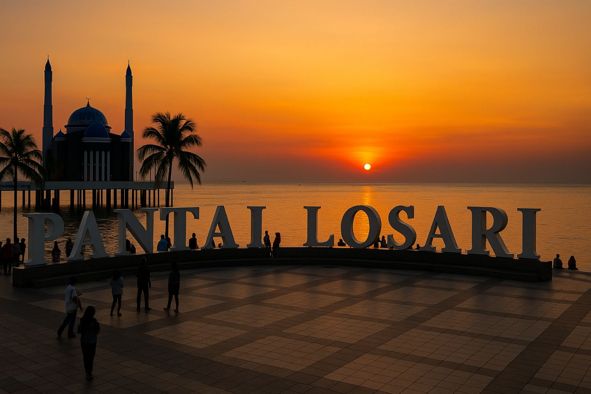

Pesona Pesisir di Jantung Kota Daeng

Pantai Losari merupakan ruang publik terbuka sekaligus ikon pariwisata paling terkenal di Kota Makassar, Sulawesi Selatan. Berbeda dengan pantai pasir pada umumnya, pesisir Pantai Losari dibatasi oleh tanggul beton berupa anjungan luas yang menghadap langsung ke Selat Makassar di sepanjang Jalan Penghibur.
Kawasan ini menjadi titik terbaik warga lokal dan pelancong untuk menikmati panorama matahari terbenam dengan siluet Masjid Terapung Amirul Mukminin. Saat senja berganti malam, suasana anjungan semakin hidup oleh jejeran penjual kuliner otentik seperti pisang epe bakar, es palu butung, dan aroma kopi tradisional khas Sulawesi.
Suasana Pantai Losari
Galeri Pantai Losari
Aktivitas Menarik di Pantai Losari
- Menikmati Sunset: Menyaksikan panorama matahari terbenam berlatar kapal-kapal di Selat Makassar.
- Eksplorasi Kuliner Malam: Menikmati pisang epe aneka topping, coto Makassar, dan segarnya es pisang ijo.
- Rekreasi Anjungan: Jalan santai, bermain sepatu roda, atau jogging di pelataran budaya yang luas.
- Wisata Religi: Menunaikan salat magrib di Masjid Terapung dengan tiupan angin laut.
- Wahana Perairan: Menyewa bebek air, perahu nelayan lokal atau kapal phinisi untuk berkeliling perairan di sekitar pantai dan pulau.
Informasi Lokasi & Tarif
Lokasi & Rute Akses
Kawasan Anjungan Pantai LosariJl. Penghibur, Kelurahan Maloku, Kecamatan Ujung Pandang,
Kota Makassar, Sulawesi Selatan 90111.
Tabel Biaya & Operasional
| Kategori Layanan | Tarif / Biaya | Jadwal & Keterangan |
|---|---|---|
| Tiket Masuk Kawasan | Gratis (Rp0) | Buka 24 jam setiap hari |
| Parkir Sepeda Motor | Rp2.000 - Rp5.000 | Area parkir tepi jalan |
| Parkir Mobil | Rp5.000 - Rp10.000 | Area parkir resmi tepi jalan |
| Kuliner Pisang Epe | Rp15.000 | Varian (Original, Keju, Cokelat) |
| Sewa Wahana Bebek Air | Rp25.000 - Rp35.000 | Durasi 30 menit per sesi (khusus sore hari) |
| *Tarif parkir dan sewa wahana dapat berubah sewaktu-waktu sesuai ketentuan setempat. | ||